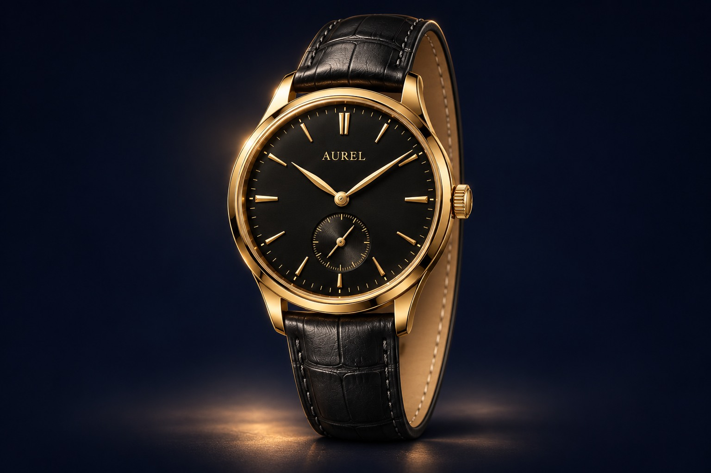
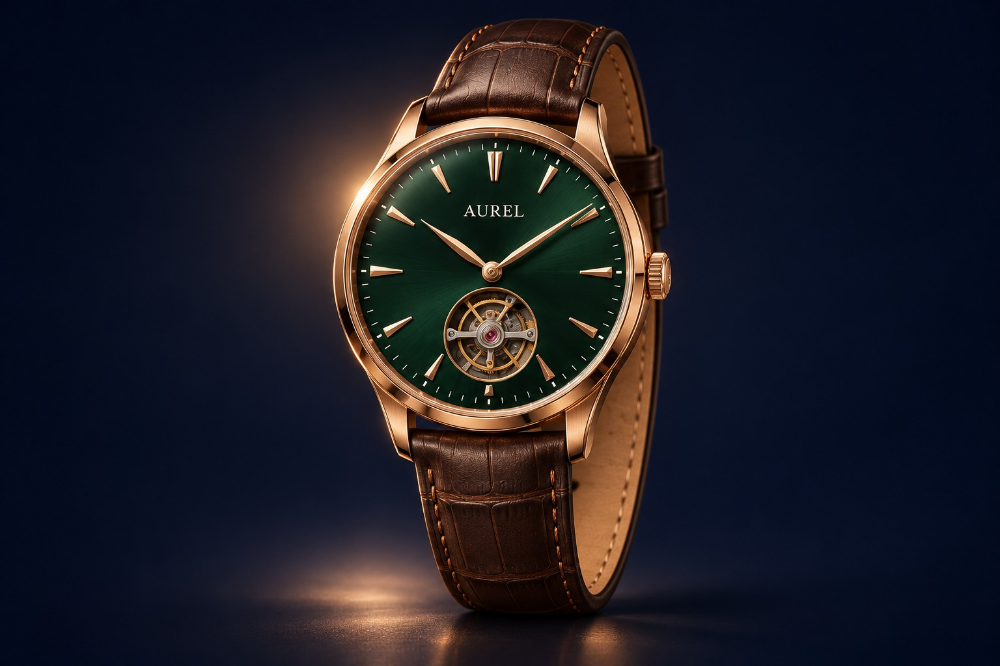

A considered dial
Clean markers and purposeful layouts keep each concept distinctive and easy to read.
DISTINCT BY DESIGN
For the moments that become your story.
Discover timepieces with a character of their own.

EXPLORE AUREL
See how to explore the collection, browse each watch gallery,
and discover the details behind the project.
01 — THE COLLECTION
Six expressions. One considered collection.
Choose the one that feels like you.
Original design concepts. Indicative prices in INR. Presented as a brand showcase; purchases are not available.

02 — OUR PERSPECTIVE
AUREL begins with a simple idea: a watch should feel like an extension of the person wearing it.
Our concept collection explores the balance between bold character and quiet confidence. Rich tones, considered proportions, and distinctive dial designs give every piece its own point of view.
From an ordinary morning to an unforgettable evening, find a signature that belongs to you.
Discover your AUREL ↗03 — A CLOSER LOOK
A considered palette. A balanced silhouette.
A design language that carries through.
Clean markers and purposeful layouts keep each concept distinctive and easy to read.
Leather-inspired straps and sculpted metal bracelets bring contrast to the collection.
From warm champagne to cool steel, each finish is chosen to sit naturally with your style.
04 — LET’S CONNECT
Curious about the collection or the project?
Send your enquiry to the creator.